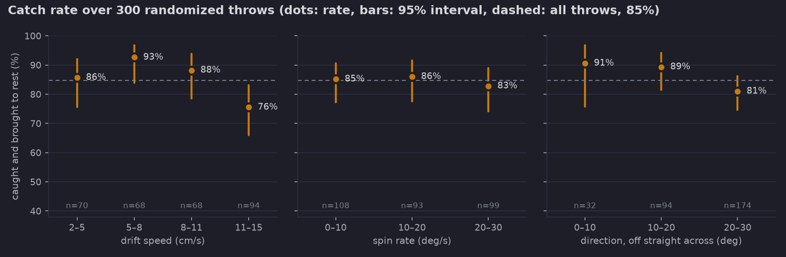
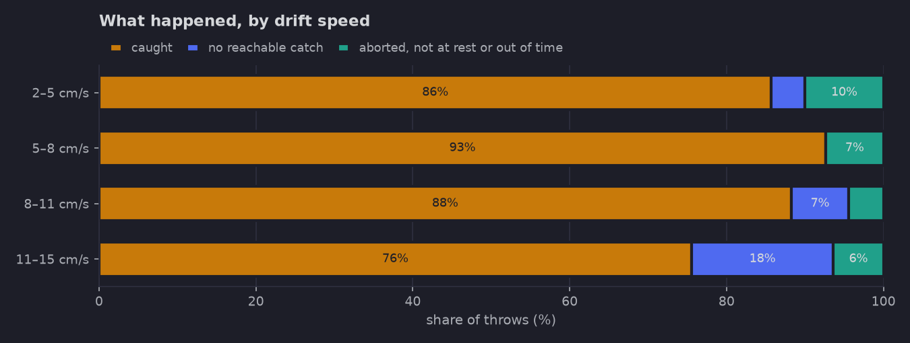
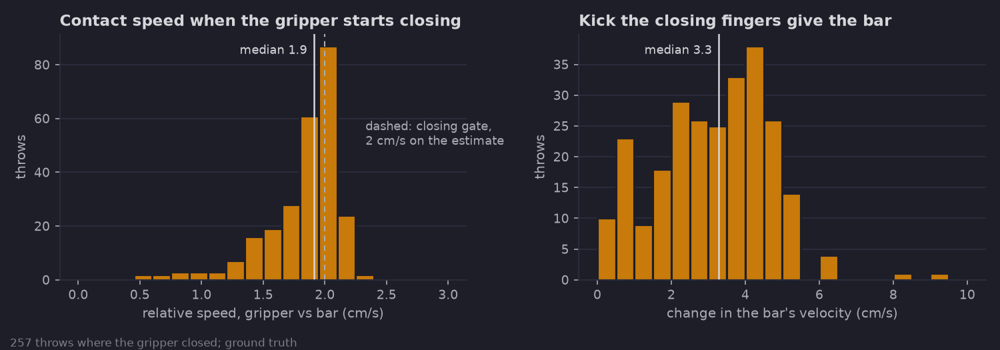
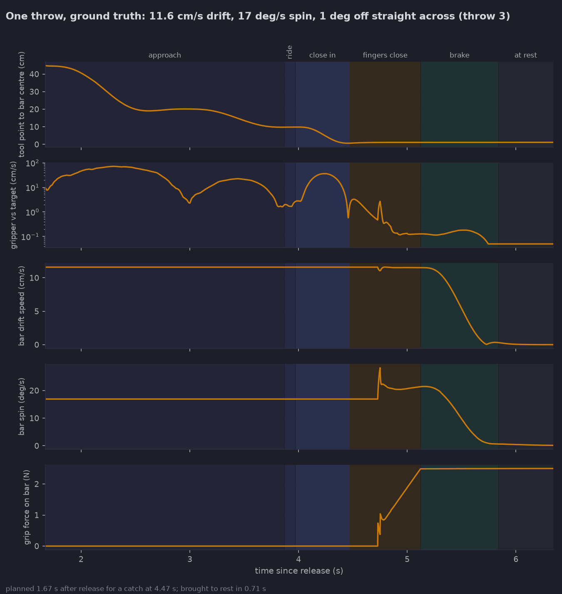

Spin 20 → 44°/s
The hand chased itself
Once the fingers touched, the estimator saw the hand moving the bar and the hand followed the estimate. Freezing the target motion when closing starts fixed it.
Autonomous capture · simulation study
A fixed-base robot arm catches a tumbling bar that drifts past it, seen only through a noisy sensor, and brings it to rest without knocking it away.
85%
caught and brought to rest
95% CI 80–88 · 300 throws
1.9cm/s
contact speed at grasp
median · worst 2.3
2.5N
peak grip force
slip in the grip 0.75 mm
0.68s
to bring it to rest
≤ 0.3 m/s² · ≤ 1 rad/s²
01 · Demo
The full 42-second run: four throws in real time (slow, medium, fast, and one that aborts, backs off and catches on the retry). The blue ball is the planned catch point; the dots are the filter's predicted path.
02 · Problem
A 5 × 5 × 15 cm, 0.5 kg bar drifts past a 7-DoF arm at 2–15 cm/s while tumbling at up to 30°/s. Nothing pulls it back: a bounced object just leaves. So the goal isn't contact, it's a soft capture that ends with the object held and still, using only a 30 Hz pose sensor with 5 mm and 2° of noise and 5% dropped readings.
03 · Method
Kalman filter for position and velocity; sliding-window fit for spin. Velocity within 1 cm/s after a median 0.70 s.
Sweep capture times along the predicted path. Take the earliest grasp, square to a face, that the arm reaches in time and holds through the stop clear of singularities.
Work in the bar's moving, spinning frame: line up behind it, ride 10 cm back, then slide in matching drift and spin.
Close only when the estimated miss is under 1 cm and 2 cm/s; otherwise back off and re-plan. Fingers close fast, then slowly through contact.
Bring drift and spin to rest together on a smooth profile, so the grip only supplies a small, steady force.
04 · Results
Speed, direction (within 30° of straight across, from either side), spin axis and rate, start pose and sensor noise all random. Scored on ground truth: held between both fingers at under 0.5 cm/s and 2°/s.




| Caught and brought to rest | 254 | 85% |
|---|---|---|
| No reachable catch | 25 | 8% |
| Aborted at the grasp gate | 16 | 5% |
| Held but still turning, or out of time | 5 | 2% |
05 · What testing changed
Spin 20 → 44°/s
Once the fingers touched, the estimator saw the hand moving the bar and the hand followed the estimate. Freezing the target motion when closing starts fixed it.
Kick 5.6 → 3.8 cm/s
Fast to 5 mm short of the bar, then slowly through contact. The worst-case kick halved, from 10.6 to 5.3 cm/s.
Caught 65 → 85%
The planner committed to a grasp from above and gave up after one try. Trying each face and re-planning after a miss lifted the catch rate without touching the grasp.
06 · Limitations
The 85% holds inside the envelope it was tested in. Outside it, or on real hardware, these are the walls it hits first, and what would move each one.
07 · Contact
Mechanical engineer, B.Sc. Technion (robotics specialization). Authorized to work in the US and relocating to New York. I built this project for Icarus Robotics' Mechanical Engineer role.
Also: GitHub repository · one-page write-up